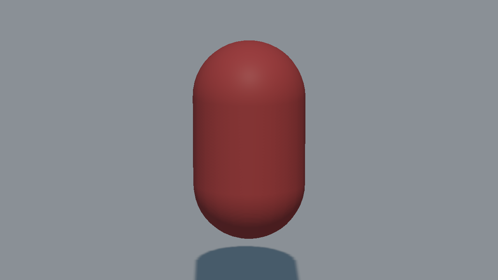
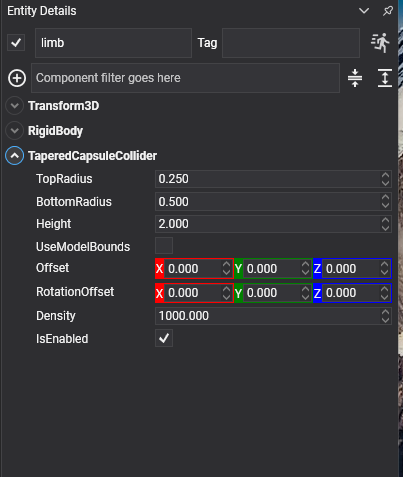

Tapered Capsule Collider

A capsule with a different radius at each end: two spheres of different sizes with the surface stretched between them. Limbs, tapered bottles, pear-shaped props: anything that is broadly a capsule but thicker at one end.
This shape had no equivalent in the previous API.
TaperedCapsuleCollider Component

Entity limb = new Entity("limb")
.AddComponent(new Transform3D() { Position = position })
.AddComponent(new RigidBody())
.AddComponent(new TaperedCapsuleCollider()
{
BottomRadius = 0.45f,
TopRadius = 0.2f,
Height = 1.6f,
});
this.Managers.EntityManager.Add(limb);
Properties
| Property | Default | Description |
|---|---|---|
| BottomRadius | 0.5 | The radius of the lower sphere. |
| TopRadius | 0.25 | The radius of the upper sphere. |
| Height | 2 | The total height along Y, both caps included, the same convention as CapsuleCollider. |
| UseModelBounds | false | Reads both radii as factors of the larger of the model's X and Z extents, and Height as a factor of its Y extent, instead of local units. See Local Units or Model Bounds. |
| Offset | 0,0,0 | Moves the shape relative to the entity. |
| RotationOffset | 0,0,0 | Rotates the shape relative to the entity. |
| Density | 1000 | Density in kg/m³, used to compute the body's mass when its Mass is 0. |
Important
A tapered capsule is not symmetric about the entity's origin. Its two sphere centres sit at plus and minus half of the straight section, (Height - TopRadius - BottomRadius) / 2, so the shape reaches that plus BottomRadius downwards and only that plus TopRadius upwards. With a height of 1.6, a bottom radius of 0.45 and a top of 0.2, that is 0.925 down against 0.675 up, so the shape's middle sits 0.125 below the entity. Since every primitive mesh is centred, a drawn capsule placed on the same entity will look as though it is floating. Lifting the collider by half the difference of the radii, Offset = (0, (BottomRadius - TopRadius) / 2, 0), puts the two back on top of each other.
Note
There is no tapered capsule primitive mesh, so the picture above is the collider's own wireframe from debug rendering. To draw one, use a model, or a straight CapsuleMesh if the taper is slight.